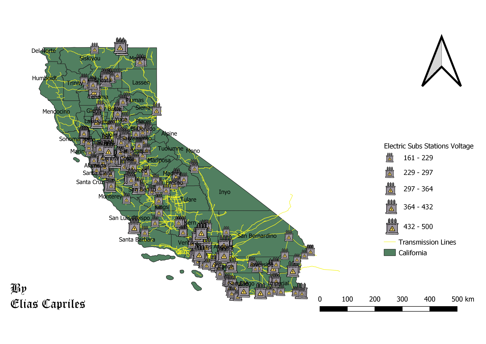

California's Major Electric Substations
This is a Proportional Symbol Map that describes the various substation within the Golden State. I selected the topic becasue I am interested in redundancies within americas eletrical grid. Plus I have always wanted to live in the West Coast.
Moreover, I though it was a great opportunity since I knew that there are several different substations which can be then be categorized by their difference of capacity. It looks crowded, but these are the major substations. The original CSV came with a lot more substations that I cut down using an expression.

Here is the CSV used to create the Proportional Symbol Map
Here is the Geojson of the points
Here is the CSV used to create the Proportional Symbol Map
Here is the CSV used to create the Proportional Symbol Map